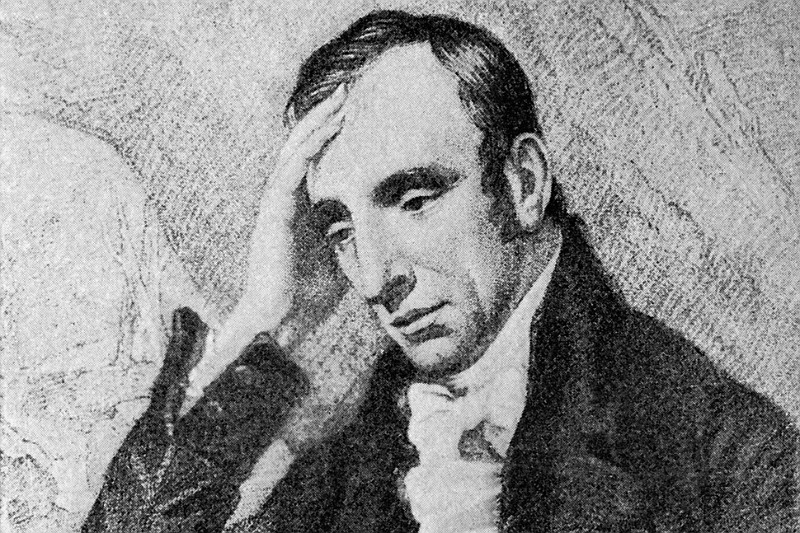

William Wordsworth was an English Romantic poet, writing in the late 18th and early 19th centuries. His poetry has been pretty influential on me, and I revisit a lot of his work often (and even visited his house, favourite walking paths, and grave on a holiday a few years ago!). His most famous poem, I Wandered Lonely as a Cloud, also known as the daffodils poem, is a stunning reflection on the solace and peace that beauty in the natural world can bring to us, even in our darkest moments. Themes of coming of age, loss of innocence and beholding The Sublime, fill his work.
In his poem, Nutting, a young man visits and decimatess a "fairy bower", thus destroying both the purity of this untouched natural space, and his own innocence. While many of his peoms are joyous and beautiful, such as My Heart Leaps Up, which I embroidered onto a dress from my type specimen, they also often explore first experiences of shame, guilt or fear. They are very powerful and visceral, and I would love to capture this same kind of conflict - the majesty of nature is overwhelming which can be frightening.
click here to learn more

make space!